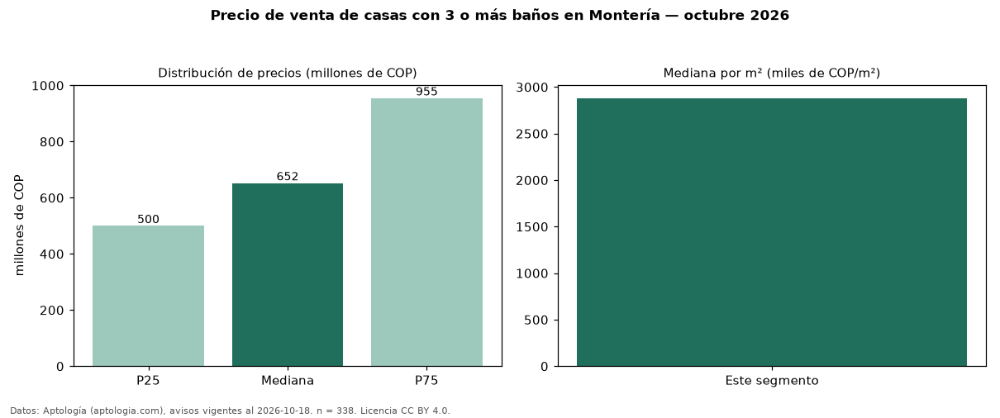

Precio de venta de casas con 3 o más baños en Montería — octubre 2026
COP 652 millones es el precio mediano de casas con 3 o más baños en venta en Montería (n = 338 avisos). Frente a la mediana de todas las casas en venta de Montería (COP 562 millones, n = 480), queda 16 % por encima; este segmento reúne el 70 % de esos avisos. Por metro cuadrado, la mediana es COP 2,88 millones/m² (n = 319), 10 % por encima del conjunto de referencia (COP 2,62 millones/m²). El área mediana anunciada es 237 m². El segmento con más oferta es el de 3 o más habitaciones (335 avisos, mediana COP 650 millones). La administración mediana declarada es COP 400.000 al mes (n = 21). La mitad central de los avisos va de COP 500 millones a COP 955 millones (razón 1,9), una dispersión moderada. El estrato más frecuente es 3 (36 % de los avisos con estrato). Datos: Aptología (aptologia.com), CC BY 4.0 — https://www.aptologia.com/venta/monteria. Archivos: PDF, CSV con las cifras y gráfica PNG.

| Avisos únicos | 338 |
|---|---|
| Percentil 25 | COP 500.000.000 |
| Mediana | COP 652.500.000 |
| Percentil 75 | COP 954.757.970 |
| Mediana por m² | COP 2.880.658 |
Fuente: avisos vigentes de portales inmobiliarios recopilados por Aptología, deduplicados (mínimo 30 avisos únicos por celda). Precios pedidos, no cerrados. Fecha: 2026-10-18.